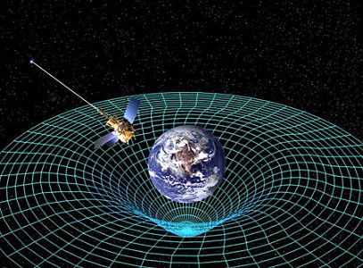

从时间的七个指向认识
“如来非过去非现在非未来”
冯冯
慈忍 / 誊录
（一）时间的错觉
很多学者在他们的论文内批评印度人是没有时间观念的民族；又批评佛经时间观念最混乱最不可靠，也有人批评中国人不重视时间观念。从现代的实用主义眼光来看，尤其是以西方社会工业功利眼光来看，无疑这些批评很有嘲讽的立足点。对于一向悠闲自得的中国人与印度人也都不无带着侮辱的鞭策作用。
“一寸光阴一寸金”与“时光一去不复返”这两句谚语，都很有好的立志作用。倘若用来警惕用途，那是很好的。在学佛修行上，必须及早实践，以免蹉跎光阴，误了修行。不过，提及佛经的时间观念问题，我可不能同意那些批评：我认为是批评者并未深入研究佛经，亦未认识科学，才会有那种肤浅之论！
佛经所载的时空，都是复度多元无限无数的宇宙与时空，并非局限于我们这一时空，并非仅及于我们这一个宇宙，更不只讲及色界（物质世界）的时空。那都是超越物质世界及经验世界的。批评者的眼光与经验则只是被禁锢于他们的经验的有限局部的世界。从整体意义来说，任何单向的时空都是虚妄的。佛经就常常指出时空的虚妄性。
其实，西方社会也不是没有人知道时空的虚妄性，爱因斯坦就说过这样的名言：
“对于有信念的物理学家来说，所谓过去，现在和未来，三者的界限只不过是一种幻觉，它是一种顽固的存在的幻觉！”
For us convinced physicists the distinction between past, present, and future is an illusion, although a persistent one.
── Einstein's letter to Michele Besso's sister.
金刚经一体同观分（第十八）句云：“过去心不可得，现在心不可得，未来心不可得”这是教人三者之心，具应沉空湛然清净，三处求心心不有，心不有处妄原无。这一般三心不可得，也是根据对宇宙的观察而悟得来的空觉。也是指出时间的虚妄性。教人勿执着，勿隔于有执或空执。不过，不仅宇宙科学的人，就不知道这些佛语金句的宇宙真理的来源及意义，所以常有人百思不解为什么三心不可得，如果先明了科学上时间的虚妄性，就可以迎刃而解了。
华严经说：“未来是过去，过去是未来。”
从我们这个物质世界五浊之世的地球上来看，是很难以领会那种超越现实的时间观念的。就我们的人生而言，不但是人类，就是其他生命，都无不是从出生到长成到老，一切事物的次序，都是向前进的。昨天是过去，今天是现在，明天是未来。到了明天，再回头看，“今天”也成了昨天。时间是一直向前走的。地球的自转，形成了日出日落的错觉，也因不断向一个方向自转而造成时间向前的幻觉。
倘使地球不是只循环反时针方向自转，也不随着太阳公转，也没有周而复始的地轴倾斜度形成春夏秋冬，生物的生机不随着阳光照射而进展，倘使这些都没有一定动律与周期，倘使地球突然反时针的向东自转，忽而顺时针的向西自转，倘使地球根本就不转动，太阳也不公转，宇宙也完全不动，那么，时间就不会是我们现在所知的意义了。
我在前一篇论文中提过，我们的宇宙是真空的大爆炸所产生的，真空的朽灭；则化为质点，形成物质密度，使宇宙不断扩张，有了先后次序，于是产生了时空。这种扩张的次序，在空间方面，是上下四方八面的多向发展，但是时间方面，却是单向的，不过，当宇宙的物质密度，到达了临界密度之时，它就会停止扩大，超越了临界密度的另一边，它就会收缩。当宇宙有一天会这样收缩之时，原有的次序就会反向而行。形成时光倒流！到那种情况，未来就成为过去，过去也成为未来！在我们短暂的人生中，当然无可能见得到这种宇宙收缩而致时光倒流的奇象。但是，物极必反，我们宇宙必有一天会收缩，时光必然倒流！倘若届时的人类尚未用超核子武器自相残杀死光，就会看到时光倒流的奇象了。想来那也是令人悲喜交集的事，试想，人可以越长越年轻，以往做错的事，可以倒流消除，可以重头再来，以往的遗憾可以弥补，那不是很好吗？但是，人越长越年轻，从八十岁倒长回去，变成一岁，变成婴孩，还会变为一粒细胞……这岂不可怕？还有，死了多年的人，都复活了回来，亲人相见，固然可喜，但是，人人都活回去，全人类都活回去，终于倒流到最原始的人类，又再倒流成为未进化的灵长目，又再倒回去成为低等哺乳动物，像老鼠似的，又再倒回去，成为两栖类，爬虫类，成为低级脊椎动物，又再成为软体动物，又再成为单细胞生物，又再成为最简单的光质点……这岂非也是第一方式的毁灭？多么恐怖！
就是我们的宇宙，也会不断倒流，最后收缩到成为本来无一物的真空。这种日子，我们的世代看不到，我们好比是庄子蜉蝣篇中的蜉蝣，生命那么短促，看不到宇宙收缩的恐怖景象。但是，诸佛是知道的，佛经许多段落都有近似这样的叙述，佛是认识这一个宇宙的虚妄性的，也认识众多宇宙(三千大千世界)的时空不一致，此灭彼生，一时生一时灭。如果从新宇宙学入手，就看懂佛经说的多元无数宇宙。
在西方，三百年前，英国数学家兼物理学家埃萨·牛顿发表了他的万有引力学说与运动的法则，使后世的科学家得据以计算出太阳系各行星的轨道。牛顿的机械力学说解释了太阳系各行星的运动。说明了一切物体都是像小弹子似的，水与空气亦是由微小的弹子(原子)组成。可是，牛顿的学说内并无提及时间的方向。
假若有人拍摄了一卷影片，记录下来地球以反时针方向自转却以顺时针方向绕着太阳公转的情形。这部影片，可以顺次序放映，也可以倒过来放映给你看。这就是时间可以倒流的一个浅显的比喻。除非你是已经从拍摄之始就看过，否则，你就很难判断，到底顺映的是真正的次序，抑或倒映的是真序。又除非你看到地球上生命次序的倒流，像：人越长越年轻，倒回去成婴儿，否则，你就不会知道倒映的影片是时间方向的倒流。
在牛顿的机械力学说上，根本就未提到时间的运动方向。时间的运动方向箭头，你既可向前，也可以后退的！在现代物理学家看来，机械力学的时间根本就是可以倒流的！(Time is reversible)。
假定我们以时间的某一点作为“零”，而我们又知道太阳系中各大行星的公转速度，我们根据牛顿的机械力学方程式，就可以计算出行星在未来第一百万年的位置，也可以反过来计算出一百万年前的位置。这是一个浅释的例子说明牛顿的方程式是时间可以倒转的。
牛顿的学说没有提到时间的指向箭头。很多建基于牛顿学说的后人学说，例如：麦斯维的电磁学说(Maxwell’s Theory of Elecma Electromagnetism)爱因斯坦的相对论(Einstein’s Theory of Relativity), 还有量子力机械学说(Quantum Mechanics)等等，都同样地没有提到时间指向箭头。
为什么所有的物理学理论都不提及时间指向呢？因为，人人都习惯了时间的单行指向，而且，这是一个物理学上最深奥的问题，没有人能完满的答覆，包括爱因斯坦在内。
直到近年来，才有几位科学家对于时间问题发表了新的发现。
首先，我要提及国际知名的日本物理学大家松下真一博士用数学浅说“时间”。松下博士认为时间并非单一方向直线的，他认为时间的持续是“非直线的”连续。他说：用一个二次变换所造成的半群(Semi group)作为“连续”的基础，若将系数简化，设二次项数之系数为2，则可将时间写成有关变数(Parameter)的正二次函数。他认为宇宙无始无终。在此方程式二次曲线的“下限”越来越长，越往“未来”则越短。而且，最“下限”处是时间的开始，正是和宇宙开始对应点。在此，一切都以光速在“时间”上远离我们，但无法达到，绝不是“有限”的开始。按照此模式推论，则旧约创世纪上帝创造世界之说就不可能成立，以时间构造而言，法华经所说的永远的佛性，却是正确的。
松下博士又说，这个时间方程式的下限点，若使用“赫伯常数”(Hubble constant)仍然会成为Ho-1=-?h,应用到核外电子运动上，则可得到普朗克常数Ho之关系式，而能解释常数在宇宙中的意义。
他又说，有此二次曲线，最少的下限之比-?h更小的“变数”会再上升，由此，可知“时间”是由未来向过去进行的。我们可由此知道，“虚”的世界与现实世界，无论在任何一瞬间都是表里一致的。
松下真一博士的论文，发表于日本著名的，岩波书出版的“思想杂志”，详论“时间观念”，不过，就是数学家与物理的人，也未必全看得懂，不用提像我这样并非数学出身的门外汉，又兼以日文“水皮”之至，我上面引用的一段，是余万居教授所翻译的松下真一博士大着“法华经与核子物理学”一书内的一段，读者若有兴趣，请参阅天华公司出版的这本名著，以窥全貌。
从松下博士的一段话，虽然只是片鳞半爪，我们也可以由此证明华严经说“未来是过去，过去是未来”的确有超越时代的科学意义了。
松下真一博士是一位出身九洲大学的数学家兼物理学家，曾主修数学中思想最艰深的“解析集论”，又在西德汉堡国立理论物理学研究院，参加“统一场”理论机“新宇宙论”等的研究工作，他是一位成就很卓绝，在国际数理及宇宙学方面知名度极高的学者。他是一位虔诚的佛教徒，更是唯一最有能力把超时代的数学物理学与佛学互相印证的东方学者，他的一九七九年出版的“法华经与核子物理学”，相当深入的比较了法华经与核子物理学，像他的其他著作一样，他把佛经内的宇宙真理，透过他的国际学术崇高地位，用他的超级科学学问，介绍给世界科学家，他的贡献，是无法估计的。
松下真一博士的著作，使我感动及敬佩。反观我们中国人，科学家虽多，却没有一位松下真一这样热心从事科学分析佛学的人。能不汗颜？至今为止，我只见到数十年前尤智表教授的著作“一个科学工作者对佛学的认识”，与黄明德教授的“空性与波函数”，在水平上都是超等的，不过，可惜像这样的超级好书，至今还未见再有出现了。
松下博士的大着出现之初，我并未得见，但是，我以一个门外汉，也已经走上了科学印证佛理研究之路，出版了“太空科学核子物理学与佛理的印证”(天华公司出版，一九八七年一月一日，其中搜集的二十一篇论文，是蒙“内明”杂志两三年来每期以首篇刊出的)，我固然是自不量力，勉强挑起这副重担，发奋自励的结果。但是，我比松下真一差得太远了。但愿我们中国的科学家有人发心用他们渊博的学问去研究印证佛学，那一定会千百倍胜于我的幼稚探索，我多么热切渴望我们中国人也出现几位松下真一啊！
松下真一博士也是一位有名的古典音乐作曲家，在欧洲从事作曲和演奏，演出及录灌了唱片的有“亲鸾上人”(名作家井上靖作词)与“僧伽交响曲”“佛陀”等交响曲，这也是我向往的，我不敢高比松下真一，我自己也做佛教音乐及艺术歌曲，看来，这也是一种有趣的巧合。
我同意松下真一博士的“时间非直线”论。若我所见不谬，我认为时间是圆圈线的，循环不绝的。在圆圈上的某一点，向前前进，终于又回到原来的一点，我的见解，不同于牛顿的机械力学说的“时间可逆性”倒流，我认为时间是一直向前的，但是，它是一个永恒的圆圈。不断的循环。事实上，过去，现在，未来，都是在同时！阿昆达磨经论强调时间内的“存在”“有为法”，与超越时间的“存在”无为法，同为一体。这是大乘佛教的特色之一，我想我的见解，庶几近之。当然，我的见解，也只是个人愚者一得，尚待科学的考验和证明。不过，我觉得我的观点也许并没有错。
Circular time necessarily requires 5th and 6th dimension
是的，在我看来，时间是圆圈形循环的，没有始也没有终，我们认为时间是直线前进，那是一种错觉而已，我们只是占了时间循环大圆周的极小的一段。因此，感觉不出来它的弧形方向，只是感觉到它的直线指向。可是诸佛以超越宇宙的佛眼观察，就看到时间是周而复始的圆周形运动方向，所以佛经记载未来是过去，我自问也有幸看到了时间的循环圆形。
(二)时间的第一至第五个指向
现在，让我们来看看西方的尖端科学家们对于时间的看法如何。
这里要提的是英国牛津大学的宇宙学家洛泽·片露斯(Dr. Roger. Penrose)。他原是一位著名于世界的数学家，在过去十年中，以其“黑洞”理论及数学计算之贡献为全球科学界所尊崇，他十年来一直领导牛津大学的数学研究组，从事研究数学上的新难题“螺线定理”(Twistors Theory)──这是研究宇宙时空构成基本数学结构原理的一种高深学问。
片露博士从研究中发现：时间有七个指向，都是向前的，而且，都无法用已知的物理学来解释！片露博士指出，时间的第一个方向箭头，就是“心理时间”(Psychological Time)。就是人类心理上的时间感觉，那都是觉得时间是向前进行的，习以为常，我们人人都感觉到光阴似箭向前射，从来没有谁有异向之感(除非是在回忆中或是梦里，才会偶尔感觉到时光倒流)，这是很奇怪的现象。因为，我们都是由原子及次原子的粒子组成的，这些原子与粒子等等质点，无异于宇宙的同类质点。按照牛顿定律与爱因斯坦学说，则所有的质点均有服从“时间可逆流”特色，那么，我们体内的构成质点，也理应具有同样的“时间倒流”记忆才对──也应该能够记忆“未来”，一如记忆“过去”。
但是，不幸地，我们绝大多数人都只能记忆“过去”而不能记忆“未来”，这是物理学上无法解释的。(如果有人知道“未来”，那就被视为“先知”或“预见”，似乎很神奇。其实，一些也不神奇。也不算什么神通，根本就是物理学上最基本的法则而已。从牛顿与爱因斯坦的两大学说来看预见，也只不过是质点的时间逆流本性罢了。)
片露博士指出“时间”的第二个指向箭头，是“电磁辐射方向”(Electromagnetic Radiation)。举一浅例来说明如下：记得多年前有一家美国电影公司叫做“雷电华”(RKO)公司吗？凡是它出品的电影，片头不是都有一座无线电铁塔吗？铁塔形似巴黎铁塔，又似东京铁塔，这座矗立的地球上的RKO铁塔，不住从塔顶向四方八面辐射无线电波，一闪一闪的，记得吗？好，假若我们将影片倒映，就会看到，RKO铁塔的无线电波不是向四方八面辐射，而是从四方八面射向向铁塔尖顶的天线了。麦斯维的“电磁学说”(Theory of Maxwell's Electromagnetism), 并无提及“时间的指向”。但是，我们看见RKO电波倒流，就会大惊小怪。这就是等于看见投在池水中，看见涟漪一圈一圈的扩张，我们习以为常，但是看见涟漪一圈又一圈的倒回去，集合在投石的中心，我们就不免惊异了。从来没有人见过倒流的无线电波。但是，在天文学观测上，曾经收到过宇宙的无线电波回音，也收到地球发出的无线电的回归。从电磁辐射学说及电磁波的射向来说，“时间”是会逆向倒流的。
这个时间的第二个指向，观念上已经多少有些佛教的意味了。
片露斯博士指出“时间”的第三种指向箭头：这是“量子和机械力学”上的方向，科学界认为这个指头箭向，又向佛教的密教阶梯爬高了一级。量子机械学说解释次原子的质点互相作用，此一学说是相当违反传统物理学的，自从它六十年前面世开始，就一直成为物理学界争论的话题，此一学说注重质点的能量状况及其旋转情形及其或然律的存在(Probabilistic existence)。
兹举例以浅说之：从量子力学说观点来观察抛掷一枚银币，它会说，这银币或然律是：百分之五十是人像，百分之五十是穗尾，只有等你接住银币，放开掌握，验看结果，才会确知到底是人像抑或穗尾那边，只有一边，决不能同时有两面。
量子力学说不会告诉你：那百分之五十的人像显现或然律；或是百分之五十穗尾显现或然律，如何“突然”变为人像或是穗尾。观察之时，发生什么事和何时突然发生。这个浅例虽然听来不复杂，却是物理学家们多年长期争辩的基本观念话题之一。
量子力学说对于时间的看法也类似如是。它认为时间是可逆向倒流的，它的方程式提供了时间可倒流的或然律。要详论量子力学说，非本文篇幅所容许，亦非我的学识所能及，上述浅例自然是隔靴搔痒，高明的读者可自行详细研究量子力学说。本文只可提供的定量子力学说指出时间的可逆性。
时间的第四个指向，是最令人困惑不解的物理现象，那就是次原子质点(KAON译音)的衰变朽灭情形，基安子是一种中性的微质点，它会衰变成为更微小的物质点。在一九六四年以前，物理学界认为：无时间是向前抑或是向后走，任何质点的衰变朽灭的速率都是一样的。倒了一九六四年，普林斯敦大学的两位物理学家华芬治(Val Logsdon Fitch)与詹士·戈朗年(James Cronin)从实验发现了基安子在时间逆向的世界之时，衰变朽灭的速率不同于时间顺向之时。
Val Logsdon Fitch James Cronin
必定有读者要问，两氏怎能制造逆向的时间？那是不可能的啊！
不错！不过，两氏做了很巧妙的实验，把时间指向倒转过来。
量子力机械定理之中有一条很著名的定理，名叫“改变电荷──等位──时间”(Theorem of Charge──parity── Time 简称为CPT，此处为暂译)，假若我们把我们现实的世界“物质”改变为“反物质”(例如，改变物质原子的电荷)，将它反射在镜子上，这就改变了它的等位。把时间倒转，那么，结果就形成了与我们现实世界完全不同的世界。
当芬治与戈朗年两氏做这种实验之时，他们改变了电子的电荷和等位就发现了有些基安子的衰变朽灭速率有异于正常。这就可见，基安子等不稳定的质点，在时间逆行之时，其朽灭的速率会不同。要论证是很麻烦复杂的，简单的说，当我们改变了电荷(C)与等位(P)两项因等之后，时间(T)也会变成了一种常数，势非随之而改变逆行不可，反过来说，若要改变时间为逆向倒流，则(C)与(P)两项亦势非改变为相反不可。从基安子的衰变朽灭异速，就可以看出时间的另一种逆向可能性。
迄今为止，物理学家们只有在基安子的实验中发现到时间逆向的第四种指向。而其他的质点，例如Uranium, Thorium, Radon 等，它们的朽灭变化，速率都与时间的顺逆无关。这是怎么一回事呢？为什么基安子这样特别？如果相信是万能的上帝创造世界，怎么它会造出这样参差不一致的微质点来？上帝也会有错误吗？基安子虽小，问题却不大。
芬治与戈朗年两氏的发现，使他俩于一九八零年荣获诺贝尔物理学奖金。
上面所介绍的时间的四个指向，都是从物理实验中观察微细世界而发现的。下文要介绍的时间的另外三个指向，则是存在于无限宏伟的宇宙奇象。前面的四个指向，使物理学界至少不致反对或否定的，但是下文的三个，则一直是物理学界仍在争论未定的。
先提的是第五个时间指向。
一九七零年，上文提及的英国牛津大学物理大家片露斯博士协助提出了宇宙中的“黑洞”与“白洞”（Black Holes & White Holes）学说，有人问他白洞是什么样子。他就把一个“黑洞”的时空图解倒转过来，说这就是“白洞”，他这样做，就把时空都翻转了。揭示了时间的另一个指向。（一般来说，时空图解，是将时间放在一个轴上，空间放在另外一个轴上。通常地，以垂直的轴线来表示时间以水平轴线作为表示空间）。大多数宇宙学家都同意他的见解；认为“白洞”正是“黑洞”的时间逆向倒流。如果有人还不知“白洞”的存在，至少也得承认科学已经发现及证实了的“黑洞”，也应能推断黑洞的时间逆行。
当巨大的星云崩溃毁灭，形成一团密度极大的漩涡，它的密度大到连光子也逃不过它的巨大无比的吸力场（Gravity Field）黑洞已经被天文学界发现存在于宇宙很多处，甚至于在我们的太阳系附近也有。黑洞是永远存在的。深不可测，黑也不可测。我们可以推论得知，黑洞的时间是会逆行的，逆行的结果就是形成白洞，爆炸成为一般物质。不过，迄今为止，还未有天文学家发现可观察到的白洞。（自然的也甚至有人怀疑黑洞的存在。不过，科学界大多数认为黑洞存在。）
由于尚未有人观察见到黑洞，于是，白洞成为当前科学界争论的谜团之一。尤其是它牵涉到所谓可怖的“独一”（Singularity）情况──那就是说：在可怖的黑洞极高无限密度吸力之下，没有任何物质可以逃得它的吸力，连光子也逃不了（已知的任何物理学定律法则都不适用）；它的“独一情况”，是隐藏着而不为外界所知的，白洞的情形恰恰相反，任何物质都可逃脱白洞，光子也可逃脱它，因此，白洞的“独一情况”就由于有光子的连续射线（光线）而成为可见的。而且，它的物理情况相当混乱，什么物理法则都有都可适用，它的时间，可能是顺向向前的，也可能逆行倒流，没有一定的规律，这是时间的第五个指向，是最混乱不定的，无定向的。白洞的理论，玄之又玄，完全脱离了任何已知的物理学范围，毋宁说是佛典内的形而上玄理，因此，甚至于连发现人片露斯博士自己也说，那是太玄了。许多物理学家根本就否定了白洞存在的可能性。
片露斯博士多年共同研究者，伟大的物理学家，史蒂芬?赫琼（Stephen Hawking），他是剑桥大学的物理教授，挺身而出，反击了一切反对白洞存在说的学者们，赫琼博士坚持确有白洞及黑洞。在一九七四年，赫琼博士以其独特的发现，震动了全世界的宇宙学界！他的发现是：“黑洞”其实并不是深黑色的；而是辐射高热高能炙热的，像任何高能辐射物体相似，而且，他说，“黑洞”与“白洞”两者的辐射方式并无不同，两者实际上根本就很难分辨──这样看来，则片露斯博士所讲地“时间”第五个指向， 就是有问题了。两位学者为此不同意见发生了争论，赫琼博士的共同研究人，宾州大学物理学家当?裴治（Don Page）支持赫琼。直到如今，仍在争论之中，未有定论。
（三）为何未来心不可得？──时间第六个指向
提起赫琼博士，我必须在这里说一说这位伟大物理学家给予我们的观感，这是我在一九八六年十二月份观看英国BBC电视特别科学节目之时所得的印象。
电视镜头先是对正了剑桥大学的一座讲堂，戏院阶层看台般的座位都坐满了学者与学生，还有许多站票听众。然后有人宣布赫琼博士到达。我看见一位瘦弱残疾的五十岁左右的男子，戴着至少；两千度的近视眼镜，他坐在一辆四轮轮椅内，他的两腿斜歪而软弱无力地摆放在踏板上，他的两臂好像是完全退化的，只看见好像虚无一物的西装袖子和两只不成比例的手掌，不能动弹的手指。他的身体比一个十岁的小男孩还小，使我疑心在那套虚虚的西装下面到底有没有躯体。他的领带打得很糟，白衬衫领子太宽，脖子太细，他完全是一付皮包骨的样子！他的不合比例地巨大脑袋，斜歪在一旁，嘴是扁阔而歪的，流着口涎。
当一位健壮的青年推着轮椅，把他送进教室之后，全场的人都起立，纷纷鼓掌，不少人眼中噙着热泪，尊敬而怜悯地望着轮椅中这位可怜的残疾病人！他似乎完全没有生机的样子，可是他的嘴巴裂开笑意，他的深度近视眼睛内闪着无比的坚毅与智慧的精光！
这位就是以物理学新发现震动全世界的赫琼博士！曾获诺贝尔物理奖地伟大物理学家！
他被送到讲台上，开始演讲他的黑洞与白洞的新学说，他甚至于没有正常的语言能力，他歪扭的嘴巴发出呻吟般的含糊声音，没有人听得懂他在说什么。必须由他的护送者──那位健壮的青年男子，贴耳在他嘴边倾听，然后再予以翻译出来。
您再也想象不到，这么一位显然是小儿麻痹症的被害人，又兼是脑子受过严重创伤而致白痴的人，口中咿咿唔唔声音，竟然化为最高深的物理学先进学理文字，经由他的学生翻译宣布了出来，引起全场的国际著名科学家与学生，肃静无哗地恭听和做笔记，几乎人人眼中都流下感动的热泪！
我望着电视荧幕，我的热泪也奔流了。当我执笔提及这位赫琼博士时，我早已泪眼模糊！世界上自力奋斗成功的人不少，可是还有比赫琼博士更令人感动钦敬的吗？有谁见过比他更勇敢伟大的奋斗？一位白痴残疾到不能行动，连手都不能抬动，两腿全部瘫痪的人，他甚至于不能转动他的颈脖子，他甚至没有讲话的能力，他甚至于不大能转动眼球，他像一株奄奄一息的凋萎的植物，天知道他经历过多少艰辛和痛苦？怎样地挣扎奋斗？才成为举世同钦的伟大科学家？
他没有半点自怜自卑之色，他也没有骄傲的神态，他是那么自然，毫无矫作，他的微笑也是很难才表现出来的，然而他含着微笑，他发出声音也是极其困难的，可是他的嘴唇在不住颤动，他毫无保留地把他的研究心得的一切物理高能方程式与数学方程式吐露出来，由他的学生写在黑板上。
我从来没有这样地感动流泪着看完一小时的科学节目，我得承认我并不全懂他说的物理学，我却听着，望着他。我从来没这样感动和受到鼓励。像这样的一位奄奄一息的全身残疾病人，在别人老早就在痛苦中等死了，可是，他多么勇敢啊！他是怎么样奋斗的啊！他给予这个世界全人类多么大的贡献啊！他的微弱的寸磷之火，照遍了全世界，再强的狂风也吹不灭这一点微弱的生命火焰与大智慧之光啊！我从来没有流过那么多感动的热泪，我从来没有这样感觉得勇气陡增！如果一位这样痛苦残废奄奄一息的人，能够发挥那么巨大的生命意志力量，用智慧照遍了人间！鼓舞了全世界，那么，我们这些有正常健康的人，可以行走，有正常脑子的人哪，我们为什么要自暴自弃？我们为什么要无病呻吟？我们为什么软弱懦弱？我们为什么要在自造的痛苦陷阱中自我折磨？我们为什么不拿出勇气来奋斗？我们为什么只想到自己？为什么只以自我为中心？
我像剑桥大学教室的听众一样，离座站了起来，我鼓掌、我流泪，面向着赫琼博士，虽然我明知那是电视上的录影。
下面是我纪录下来赫琼博士的演讲词的一部分：“时间的指向”的大意译文。
“为什么我们无法记忆未来？”
“人类的记忆力是很难解释的，因为我们不知脑子的工作详情，不过，我们知道电脑记忆能力怎样工作。因此，我可以一谈电脑的记忆力的心理指向。我认为电脑记忆指向与我们人脑记忆的箭头是相同的，这样的假定，应该是合理的。假使两者不相同，我们就可以只有一架能记忆明天行情的电脑。就可以大杀大斩股票满盘满钵了。（听众大笑）
“在资料未纪录进电脑的记忆之前，电脑的记忆是一片混乱的，它的或然率是均等的一与零。在资料进入电脑之后，记忆就被整理成为有秩序的了，不过，为了要确使记忆正确，电脑必须使用若干“能”，这种“能”是像“热”一样会消散的，而且会增加宇宙内的混乱，我们可以显示出，混乱情形的增加，多于记忆秩序的增加。
“当一座电脑记忆一件记忆资料之时，宇宙中就会增加和累积混乱。电脑记忆中的时间方向，它所记忆的“过去”，和宇宙的混乱方向，是一致的。
“我们对于时间方向的主观，是心理上的时间指向，是由热力循环（Thermodynamic）的箭头指向决定的。这就使“热”力循环定律的第二律显得几乎微不足道了，混乱是与时间俱增的，因为，我们量度时间，是循着混乱增加的方向而量度的，这事你可以保险。（听众大笑）
“在时间的开始或终结，一切都如常。古典的“相对论”解释宇宙时空构造，认为宇宙的开始之初，必是一团无限大密度的“独一情况”，而且时间与空间都是曲线的 。（singularity of infinite density & space-time curvature）在那种情形之下，所有已知的物理法则都垮了台。（听众大笑）
“然而，量子力学说认为，宇宙时空可能是曲线的，宇宙内涵可能仍是有极限的，只是时空都没有边界和边线。它有些像地球的表面，不过多了两个“界”(dimensions)──地球的表面是有极限的，但是没有边线或边界──假若你在地球表面上航行，向着日落的方向，您一直航行下去，也不会碰着边界，也不会掉落在边缘外面。去年，我就这样实验过一次，我环游世界之后，居然又回到我出发的原地，我并无撞上砖造围墙，也没有跌堕在边缘外面…听众大笑）
“宇宙的时空，可能相似于地球的表面，时间像是地球表面的纬度，它的纬度圆圈起点在北极中心。纬度越向南移，圆圈就越大，到了南极中央，又缩小到成为一点。上图摘自 Stephen Hawking“胡桃里的宇宙”
宇宙在开始，是一点，渐渐扩大，像地球纬度到了赤道，就扩大到顶点，往南去，就缩小，到了南极中心，又变成了一个小点。
“地球的北极与南极，都是以小点，都是始也是终，但是，它没有“独一性”；没有边缘──这是人家告诉我的，我可没去过北极。（听众大笑）
“相似地，宇宙时间的开始与终结也是没有始，没有终。
“宇宙大爆炸后的热力函数（Entropy ager Big Bang）──为什么，宇宙扩大的混乱的增加方向与时间的方向一致呢？
“假若我们相信宇宙扩大了然后它又收缩，又没有边界没有边缘，我们又会有新的问题：为什么我们现在是在宇宙扩大阶段了而不是在宇宙收缩阶段呢？
我们只可以用“弱者人类法则”来回答吧！（听众大笑──译注：物理学上没有Weak Anthropic Principle这样一条，这都是赫琼博士胡诌的。）
“宇宙还得很长时间才会垮哪！到那时候，所有的星云星球全都燃烧完了，所有的霸子（Baryons 音译）都衰变朽灭成为更微小的质点，或是辐射波。宇宙将成为全部混乱，或为热力平衡状况（Thermaol Equilibrium）将不会有“热力循环”的时间指向（Thermodymanic arrow of time）。混乱不会再增加，因为宇宙将会已经达到完全混乱饱和点。
“不过，将会需要一种完善的“热力循环”指向尖头（Thermodynamic Dynamic arrow of time）以给予有智慧的生命使用。
“人类必须吃食物，食物是“能”的有秩序的“色”（form）,把它改变为“热量”，则是变成了无秩序的混乱的能的形色。因此，人不可能生存于宇宙收缩阶段，这就是为什么我们观察热力循环及宇宙学的时间箭头方向一致。......
“我这段演说对热力函数有什么贡献呢？假若你都记得我讲过的每一个字，你的大脑就已经记忆了十五万片段的资料，即是说，你的大脑增加了十五万片段或单位的资料。当你在听我讲话之时，你已经转变了大约三十万个焦耳（Joule 每一焦耳等于一千万Erps）的有秩序的食物的“能”，转变为无秩序的热能了，这些热能散失于空气之中（从你身体的出汗`呼吸`散热而消失──这就是增添了宇宙的混乱大约3x1124单位，大约是相当于你从我的演说所得到的有秩序的能的两千亿倍之多！因此，我看我还是停止吧，要不然我们就全部退化变成了一塌糊涂的大混乱了！（听众大笑及鼓掌）
赫琼博士以幽默的口吻简介宇宙的时间箭头，其中有一点最值得注意，就是他指出的时间，时间不是直线的，而是像纬度般圆圈的，不停波动的，没有起点也没有终点，这一点观察与我前面提出的拙见相近，我在本文前段说过，时间是大圆圈，不停的转动；没有始，也没有终，佛经说“过去心不可得，现在心不可得，未来心不可得”，“过去是未来，未来是过去”给与我这种时间上的启示。现在，总算在科学家当中找到了知音了。
二十年前，美国德萨斯州大学的宇宙物理学家约翰威勒（John A. Wheeler）曾经发表理论说宇宙终有一天会收缩一直下去直到化为乌有为止。此一理论引起科学界的争辩：假使宇宙收缩，是否时间也随之倒流？碎了的瓷器是否会复原？死去的人是否会复活？是否一切事物都倒卷回去直到化为乌有为止？这种争论至今仍是未有结论的。
假定会有宇宙收缩的一天，那么，在收缩的刹那，时间是会立即同时向前及向后进行的。碎了的瓷器会先碎后恢复原状，在宇宙收缩期间的人类，是否也会倒长回去越长越年轻，从成人倒长为婴儿呢？是否活人都是从死去的尸骨活回来的呢？植物是否从枯朽变为茂盛，从果实倒变为花蕾？从圣经启示录来看，“到了最后审判那天，所有死去的人都要复活”，或者正是此种情形吧？不过，大多数科学家都怀疑这种可能性，就是在笃信基督教的科学家，他们也认为纵然宇宙收缩，时间倒流，但是生命的进展仍将是从生到死的，不会从骸骨飞灰化为活人，果子也不会倒回去成为花朵。大树也不会倒长回去成为一粒种子。
我个人的愚见认为，宇宙将来在到超越过临界密度之后，于是就开始收缩，但那是空间的收缩。在时间方面，并不收缩，而是向另外一个方向前进，依然是向前的 ，而且依然是朝着无限大的曲线前进的，假若说宇宙现在是椭圆形或圆形的大泡泡，那么，收缩回去，到了一点，又从那一点又向另一界扩大，成为非物质的宇宙大泡泡。换言之，宇宙的收缩并不是倒回去的，而是一直向前面方向收缩的。就好比从北极中心的一点，向南移动成为越来越大的球形，超越过了赤道（以之比喻临界密度），继续向南，就一路收缩，缩到南极，有缩成了一个小点（非物质），将来，南极的一小点，又再大爆炸，成为物质宇宙，向北扩展，到了赤道之后，又再缩小，到了北极又成为一个小点，成为非物质的“空”。（所谓“空”，并非虚无的顽空）。这样不断循环，无始无终。而时间的箭头，始终是向前的，不过，这种向前，是循环曲线圆轨，所以现在可以追上未来，未来的未来就是过去。假若我们乘坐一架超光速数倍或数十数百倍的火箭，飞入宇宙深处，应该是可以看见过去发生的事务的光子活动的。
赫琼博士认为时间像是地球上的纬度，我则认为宇宙的时间像是经度，空间才是纬度，当然我的推论尚无足够的科学证据，不过，倘若采信我的愚见，或者就可以把时空关系仍旧按照爱因斯坦的学说将时间用垂直的轴线来代表，而空间则用水平横向的轴线代表；而且两线成直角分别向前进。
我认为我的愚见亦接近佛说的无始无终。
赫琼博士认为当宇宙收缩之时，时间必然会走向过去。我推断他说的时间箭头，乃是我上两段所说的方向，虽非一百八十度的倒流。不过，他的语言实在难以听得懂，也不知道他的学生翻译得是否正确。有些人对他的了解是：时间倒流是“死人复活，碎杯子复原”式的倒流。这就并非我的印象了。赫琼博士亦于去年十二月份在芝加哥演说，他说裴治博士也对他说过，纵然宇宙收缩及垮台，时间也仍是向前进行的，赫琼博士这一次的话，我可没听错。如此说来，我在上文的愚见，大致上还不算离谱吧？可说是人同此心心同此理了。
上面提到时间的第六个指向，那是基于宇宙的扩大与收缩的。也许已经把人弄的头昏眼花，可是，我们还没提到更叫人头痛的时间的第七个指向箭头呢？下文我们不妨谈谈它。
时间的第七个指向箭头，科学家看来，算是最神秘而又最难明白的一个──那就是宇宙中的热力函数增加（Entropy increases）的问题。
热力循环物理学，本来是用于研究物理学过程上的热力循环的。一般传统的学校物理教科书说，任何物理过程所发生的热力转移，它的全部能量是保持原数的，只是改变了形式──例如：汽油燃烧的化学变化，使之成为机械能，推动气缸及车轮──热力循环的第一条法则就是能量的保持不灭（energy conservation）。但是重的热力序数是由物理作用过程产生的，它与化学作用产生的热能不同，热力循环学的第二条定律，就是：热力序数总会增加至最大数。
这里举两例浅说热力序数的增加；例一：戴在你手腕上的手表，是高度有序的一个系统，一旦它给摔碎在地面，零件散开。它就变成很凌乱无序了。例二：您发动汽车，汽油燃烧，一部分的热能推动气缸活塞披士顿，使车轮转动。但是另外一些热能并不参加工作，他们散逸于引擎内，增加了空气中的分子凌乱零星运动，这种零星的运动，是被当作废热而量度的，这就是增加了的热力序数。
我们不可能看见掷碎的瓷器自动复原，掷坏的手表还原，也不会见到死去的人从骷骨或骨灰复活为活人！这是热力循环律第二条所不容许的奇迹，因此，就出现了时间的第七指向箭头！
在我们的宇宙内，“热力序数”是趋向于最大限度（Maximum），宇宙学家们认为它可能是从“最小限度”(Minimum)开始的。赫琼博士的理论中认为，有秩序的小宇宙它的热力序数是小的，假若宇宙扩张到缩小垮台，热力序数就会倒转方向变得很大。
片露斯博士认为宇宙大爆炸之初，热力序数是很低的，后来才增加。
假若我们去问物理学家，为什么宇宙的热力序数最初是最低的？为什么一路不断增加？也许物理学家也回答不上来。自从一百五十年前，法国物理学家们创立热力循环序数学说之后，迄今还未有人有合理的答案。
这问题是显而易见的，兹举一例以说明之，假若我们焚烧一公升的汽油，根据热力循环定律，它的热力序数的增加是不能逆向的──这时间的第七指向箭头，指出不可能将时间倒转以使火焰还原为汽油。然而，这是表象而已。
假若我们在高倍显微镜下观察火焰，情形就不同了。不错，汽油内的每一份子都遵从牛顿的定律，化为热能，不能回头，不能把时间的箭头倒转。但是，奇怪的事情发现了，在显微镜下原子内次原子结构、电子波、粒子等等，它们的行为却是可以时间逆向的（Time-reversible）!
金刚经说：“所谓佛法者，即非佛法,是名佛法”，在此一小实验观察中，有得一证明。汽油焚烧是“假”观，它的时间不能倒转，是“假”观，可不是吗？次原子微粒的反时间行为，不是证明了“空”观吗？但是，汽油焚烧的顺向时间作用，仍有其功用的，它的热能帮助了开汽车。因此，可以说：“焚烧汽油，即非焚烧汽油，是名焚烧汽油！”从“假”`“空”到“中”观，在佛法的哲学如此，在科学上亦如此，真理是一致的。
不过，很多人仍未明了佛法与科学的相通。科学界尽管多人寻求佛法，却也还有更多人不肯接受“所谓时间即非时间”的宇宙真相。他们仍认为时间绝对不能逆向，另一派则认为可以，两派成为壁垒，互相争论。
早在十九世纪末年，著名的奥地利物理学家鲁特维?褒滋曼（Ludwig Boltzmann）博士曾经实验要将时间的顺向与逆向两者结合起来。他的理论是将牛顿的机械力学内的热力系数平均。他把大量的微粒的行为的平均数作为预报它们的最多数的行为倾向，可是，结果是增加了热力序数，一八七二年发表他这篇“H学说”未几即受到科学界严厉批评，他的热力序数与或然率的关系方程式：S=klogw，被科学界认为是错误的，据传说因此含恨自杀于一九0二年，于今只在他墓碑上尚刻留着此一方程式。
褒氏的学说是失败了，但是经过数十年之后，当前的一些物理学家，忽然又再重新提起褒氏的方程式来，他们认为热力系数是“统计学”上的奇象。只是在大量的物质系统才会有热力系数增加。但是，参考过上文所提及的赫琼博士的演说词，就会知道，纵然只有很少的物质，也会有热力系数增加发生。热力系数的上升，是由于运用或然率来预言未来；而不是由于牛顿的机械力学说方程式所提出的内在时间的箭头所致！
因此，有些尖端物理学家们就认为热力系数并非只是抽象的统计学奇象。这一派学者，最著名的就是在一九七七年以其“非平衡热力循环学说（Non-Equilibrium Thermodynamics）的新发现而荣获诺贝尔物理学奖的俄裔比利时物理学家伊利亚?皮里哥谨（Ilya Prigogine）。这位物理学家在比京布鲁塞尔自由大学（Free University of Brussels）研究物理学，中心为热力系数。他摆脱基督教教会的影响力，进行纯科学的研究与实验，他也曾在美国德萨斯州立大学的统计机械学中心（Statistical Mecharics Center）研究，他自己也曾是一位钢琴家。他认为无论微粒数量多寡也都会发生散失热力函数的增加。从数学观点而言，纵然仅有三粒微粒，它的混乱或然率也是变幻难测的。
皮里哥谨的美国德州大学同事汤美奥?彼得洛斯基（Tomio Petrosky）教授运用电脑来计算及实验此种变幻莫测的混乱，他在电脑屏幕上安排了模拟的太阳系图形，注入天文学家资料，使木星环绕太阳而运行，一如真实。然后，它将彗星注入。有些彗星，例如著名的哈利彗星，被太阳的引力吸引，有固定的周期回到太阳系内来旅行，这些周期是可以预测得到的。但是，有一些彗星就一去不复返，无法预测其周期。他投入一些彗星，使其轨道成为各条抛物线，恰巧介于太阳捕捉力与彗星挣脱力之间，这样就必能计算出彗星是否会被太阳捕捉的或然率。但是，当他再加入了木星的引力场之后（parabolic orbits），情形就不同了。他无法预测彗星要环绕太阳飞行多少次才逃脱飞入太空深处。
举例说，他使电脑追踪一个弹道轨道（trajectory orbit）的彗星，要电脑计算其准确性到达六位数。电脑给他的答覆是：彗星将会绕日飞行七百五十七次。当他将准确性的要求提高为七位数之后，电脑的答覆是：三十八次（轨道），八位数就是二百三十六次，九位数就是四十四次，十位数就是十二次，十一位数是一百五十七次……彗星弹道的轨迹不变，只是次数准确性变化。
皮里哥谨博士说：“从这些实验得知，动力学有些系统谈牛顿的弹道力学是毫无疑义的。因为，那都是一些并不存在于现实世界的形而上现象！”
我们需要无限大的资料才可以准确的计算出哪些彗星的或然率。但是，无限大资料根本不可得！所以，彗星的行为是难以预料的。我们永不能将彗星送回原处。人为的稍一不慎，就会计算错误；彼得洛斯基的彗星不像牛顿的彗星，它忘记了它的历史，它变成了漫无目的的乱飞，时间不回头。彼得洛斯基无法预言彗星的个别行动，他只可以预报全部各彗星总数的平均行动或然率。从这实验看来，我们又重温了上文提及的奥国物理学家褒滋蔓的理论：混乱的平均数是可以预测的。热力函数是倾向最大散失的。
彼得洛斯基的电脑彗星实验，将各个彗星投入相同的弹道，却得到很多不同的运行轨道，有的长，有些短，有些持久，有些很快就飞走。在真实的彗星亦情形相似。因此，他推测：那些彗星都可能是来自太阳系外的一些巨大星云的，它们是在混乱的弹道闯进了我们的太阳系。
德萨斯大学的天文物理学家鲁曼?史模勒高斯基教授（Roman Smoluchowsky）说，彼得洛斯基的推论，可能是指彗星来自一座命名为乌尔（Oort Cloud）星云，这座星云是很多天文学家公认的彗星群的老家的。皮里哥谨博士希望彼得洛斯基的理论及实验会开拓出一个完美的时间指向的理论。他说：“时间不倒流现象，仍需有显微的物理定律”。
皮氏反对爱因斯坦的“时间是幻觉”（Time is illusion）的主张。显然皮氏亦无知于佛经的时间虚幻观念。不过，从他上述的声明，我可以判断他自己已在动摇之中，至少，他已认识了在次原子的显微世界，却是佛说的极微微尘世界内，时间逆向倒流是事实。与我们六识所能感知的物质世界的时间是不同的。六识所感觉的世界与时间都是假相，佛说原有此种超世代的意义存在。皮氏呼吁科学家从显微次原子物理学去寻找时间顺向指向，不就等于是说明他已明知物质世界事件顺向的虚妄性吗？的的确确，时间是虚妄的！到目前为止，就我所知，西方科学界对于时间的看法，仍是意见分歧的，不过，很多科学家已经认识了上文所提的时间的七个指向，他们知道了时间并不是“单行道”，他们仍在继续研究摸索之中，希望终会有一天找出时间多向的谜底。等到科学家有更多的发现，我想，那些新知识将会更加方便于给我们多开启佛经佛理大智慧宝藏诸门。
时间的七个指向箭头或许使您仍感迷惑，的确这不是每一个人所能立即接受的。不过，现在已经有些学者研究论证：爱因斯坦的“光速最快”理论并不完善。他们新发现是，发现外太空喷射星云以超光速膨胀，证明超光速的存在，既有超光速，时间就可以逆向倒流，时序是相对的。两物相对运动速度若大于相互传递信息速度之时，时间倒流，就是必然的结果。
这种新的超光速运动学说，现时正在国际科学界中酝酿之中。等到成熟公布，我们用据以参看佛经，必将是很有兴趣的事。

这是论如来藏，可是，如来藏非过去非现在非未来，其中不也是蕴含着宇宙时间非真的原理吗？不也符合时间虚妄的法则吗？
华严经卷三十四，普贤菩萨行品第三十一偈句云：“一念游十方，无量无边劫……” “不可说诸劫，即是一念倾……” “过去是未来，未来是过去，现在是未来……”
越深入太空宇宙科学，越能发现佛说蕴含宇宙真理，佛经内真理奥妙深博，值得深思。从科学智识去认识佛经，我认为是一条开悟捷径。
华严经卷三十七，离世品三十三之—品末有句云：“一切劫非劫。”
原载香港《内明》第188期：1987年11月1日
原载香港《内明》第189期：1987年12月1日